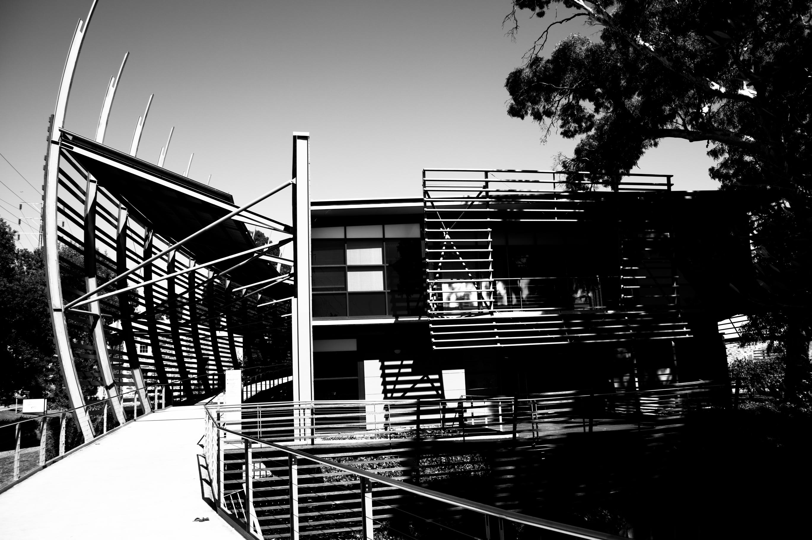

Home
The Workshop on Functional Inference and Machine Intelligence (FIMI) is an international workshop on machine learning and statistics, covering theory, methods and practice. The programme will comprise invited talks and a poster session.
FIMI Down Under will be held on Sunday 13 and Monday 14 December 2026 at the National Wine Centre of Australia in Adelaide, immediately after NeurIPS in Sydney.
Previous workshop: FIMI 2026, Tokyo, 2–5 March 2026.
Registration
Registration details will be announced.
Invited speakers
The following speakers are confirmed:
- Siu Lun Chau (Nanyang Technological University, Singapore)
- Kenji Fukumizu (The Institute of Statistical Mathematics, Japan)
- Wei Huang (RIKEN, Japan)
- Masaaki Imaizumi (The University of Tokyo, Japan)
- Krikamol Muandet (CISPA Helmholtz Center for Information Security, Saarbrücken, Germany)
- Tan Minh Nguyen (National University of Singapore, Singapore)
- Russell Tsuchida (Monash University, Australia)
Additional invited speakers to be confirmed.
Programme
The workshop will take place over two days, 13–14 December 2026, with invited talks and a poster session.
The detailed timetable, talk titles and abstracts will be announced.
Poster session
Poster submission instructions, deadlines and presentation details will be announced.
Organisers
- Dino Sejdinovic, Adelaide University
- Masaaki Imaizumi, The University of Tokyo
- Kenji Fukumizu, The Institute of Statistical Mathematics
With support from
This workshop is supported by the following institutions and grants:
- Research Center for Statistical Machine Learning, The Institute of Statistical Mathematics, Tokyo
- Responsible AI Research Centre, Adelaide
Venue and access
National Wine Centre of Australia
Corner of Botanic Road and Hackney RoadAdelaide, South Australia 5000
Australia
The venue is beside the Adelaide Botanic Garden, on the edge of the city centre.

See the venue’s information on directions, public transport, and parking and accessibility.